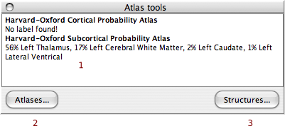

|
The main tool displays the labels (1) from any atlas(es) currently selected. Click on the "Atlases..." button (2) to select which atlases are being reported & to optionally turn on/off a maximum probability summary image. Click on the "Structures..." button (3) to open an Atlas Inspector which will allow you to browse the structures in any given atlas. Checkboxes on the Atlas Inspector control whether the cursor jumps to the selected structure and if the structures probabilty map should be shown. |
 |